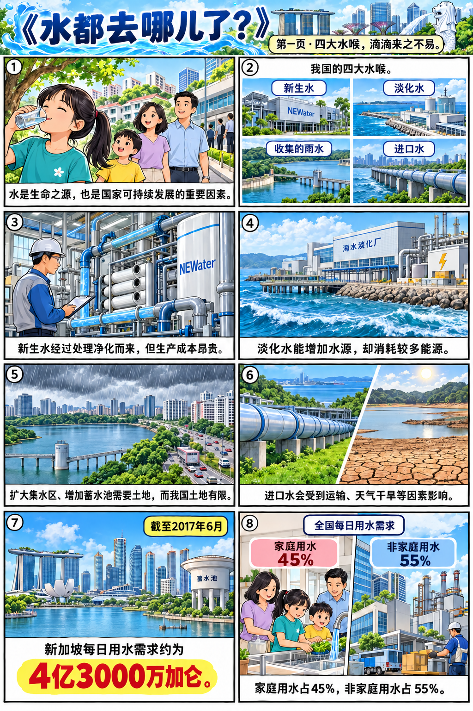
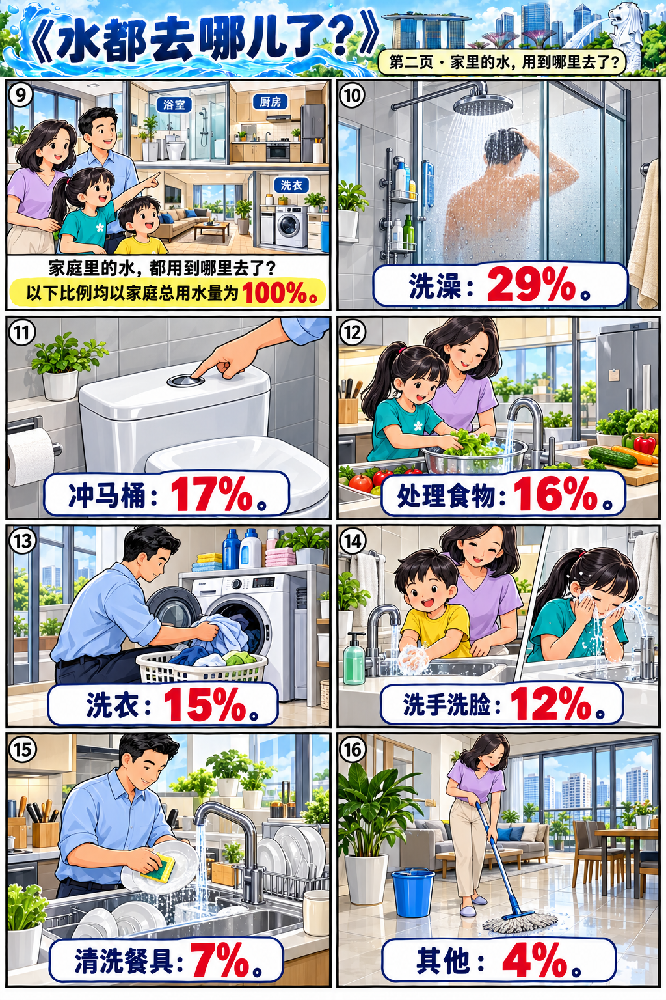
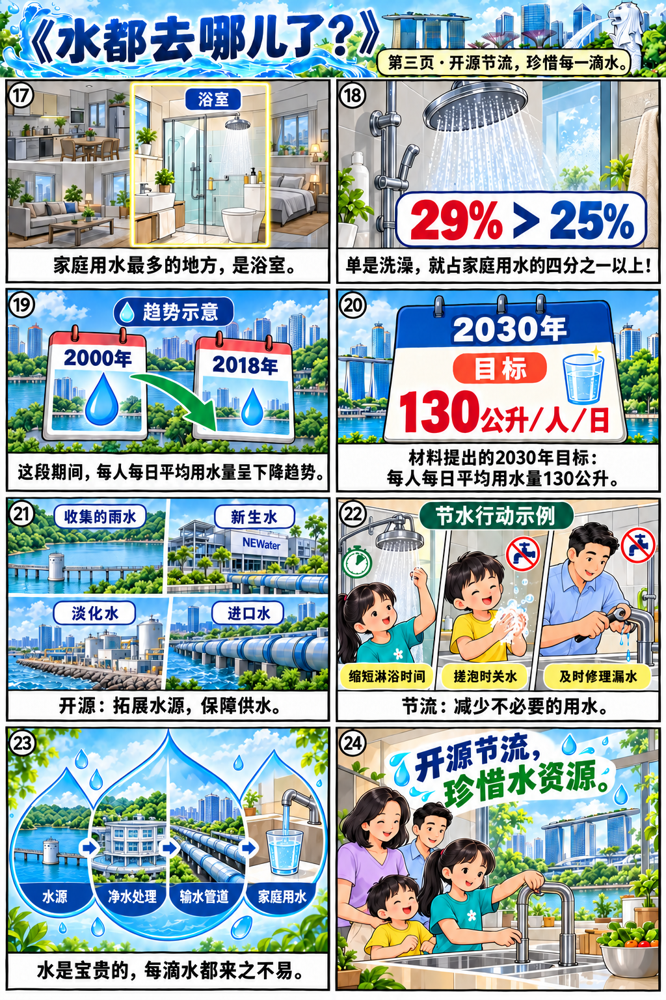

水都去哪儿了 · 图文回读
教材图文依原有顺序分为六部分，编号只用于本学习单定位。
第1部分 · 水的重要性
水是生命之源，也是国家可持续发展的重要因素。
第2部分 · 我国的“四大水喉”
我国的“四大水喉” 在水资源方面，我国面临着艰巨的挑战： • 新生水生产成本昂贵； • 淡化水消耗能源较多； • 进口水受运输、天气干旱等因素的影响； • 扩大集水区、增加蓄水池都需要占用土地，而我国土地资源有限。
| 水源 | 名称 |
|---|---|
| ① | 新生水 |
| ② | 淡化水 |
| ③ | 收集的雨水 |
| ④ | 进口水 |
名称按教材图示。
第3部分 · 我国的每日用水需求
我国的每日用水需求 在我国的每日用水需求中，有百分之四十五是家庭用水。
| 项目 | 数值（%） |
|---|---|
| 家庭用水 | 45 |
| 非家庭用水 | 55 |
约4亿3000万加仑；截至2017年6月。比例的整体是全国每日用水需求。
第4部分 · 我国家庭用水的比例
我国家庭用水的比例 家庭用水最多的地方是浴室，其中洗澡用水就超过每人每日平均用水量的四分之一。
| 项目 | 数值（%） |
|---|---|
| 洗澡 | 29 |
| 冲马桶 | 17 |
| 处理食物 | 16 |
| 洗衣 | 15 |
| 洗手洗脸 | 12 |
| 清洗餐具 | 7 |
| 其他 | 4 |
本图改自PUB 2018—2019年家庭用水量调查。七项合计100%。教材原图每个水瓶表示1.5公升；这里按所标百分比重绘。
第5部分 · 每人每日平均用水量及目标
我国每人每日平均用水量及2030年目标 从2000年到2018年，我国每人每日的平均用水量有下降的趋势。2030年，我们的目标是130公升。
| 项目 | 数值（公升） |
|---|---|
| 2000 | 165 |
| 2005 | 160 |
| 2010 | 154 |
| 2017 | 143 |
| 2018 | 141 |
| 2030（目标） | 130 |
2000—2018为教材列出的数据。2030年的130公升是教材提出的目标。
第6部分 · 开源节流
水是宝贵的，每滴水都来之不易。我们要开源节流，珍惜水资源。
完整原图
漫画辅助理解；回答问题时回到上方课文与图表核对。


